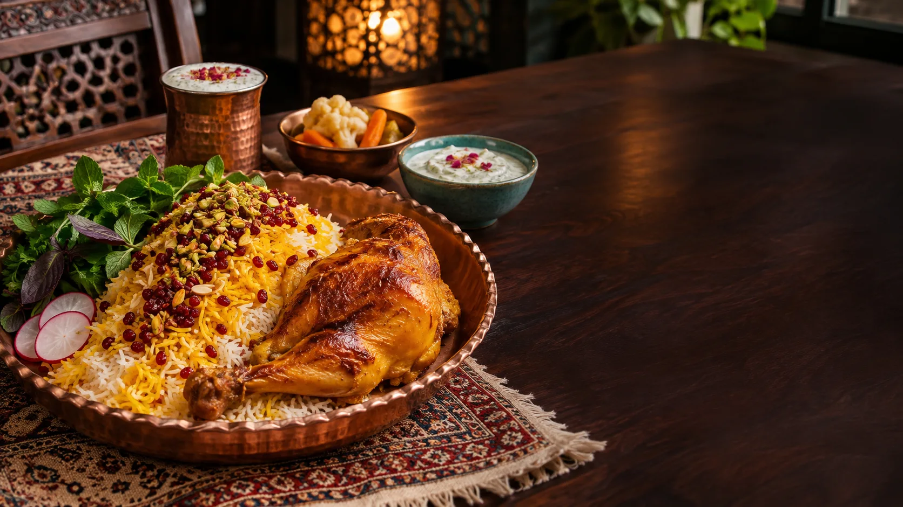

THE NARENJ SPACE · فضای نارنج
جایی برای
ماندنِ لحظهها.
فضا، بخشی از طعم یک تجربه است؛ نور، رنگ، چیدمان و جزئیاتی که یک دیدار را به خاطره تبدیل میکنند.
 نارنجمیزبانی ایرانی
نارنجمیزبانی ایرانیفضا در نگاه نارنج
گرما در
جزئیات است.
یک فضای رستورانی دلنشین از کنار هم قرار گرفتن عناصر ساده ساخته میشود: نور مناسب، چیدمان راحت، متریالهای گرم و جزئیاتی که بدون شلوغی، شخصیت فضا را نشان میدهند.
در این طرح، رنگهای عمیق، نور کهربایی و نشانههایی الهامگرفته از هنر ایرانی، زبان بصری نارنج را شکل میدهند. تصاویر گالری برای نمایش این جهتگیری انتخاب شدهاند و عکس واقعی محل رستوران محسوب نمیشوند.
از نزدیکتر
نگاه کنید.
برای مشاهده هر تصویر در اندازه بزرگ، روی آن کلیک کنید. گالری در موبایل نیز با چیدمان اختصاصی نمایش داده میشود.
تصاویر این صفحه از منابع اینترنتی انتخاب شدهاند و صرفاً برای نمایش سبک طراحی و حالوهوای پیشنهادی نارنج هستند؛ آنها را نباید تصاویر واقعی محل رستوران تلقی کرد.

03 / FOOD & SPACE
طعم و فضا،
در یک قاب.
تجربه رستوران از منو جدا نیست. غذاها را ببینید و با پیشنهادهای منوی نمایشی نارنج آشنا شوید.
مشاهده منوی غذا ↖